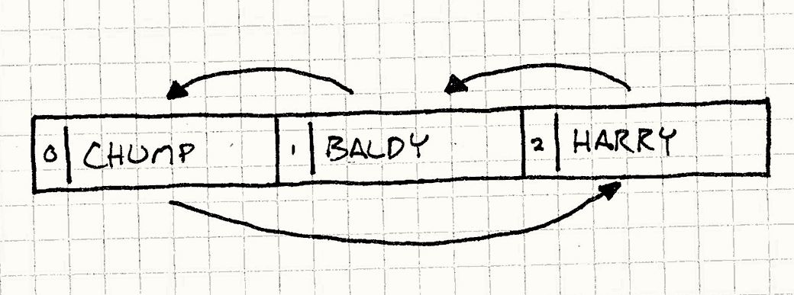

Double Buffer
Game Programming PatternsSequencing Patterns
意图
用序列的操作表示瞬间或者同时。
动机
在他们心中，电脑是连续运行的野兽。 它们的力量来自于将大的任务分解为小的步骤，这样可以一个接一个完成。 但是，通常用户需要看到事情在瞬间发生的事情或者让多个任务同时进行。
一个典型的例子，也是每个游戏引擎都得掌控的问题，渲染。 当游戏渲染玩家见到的世界时，它同时处理了一大块——远处的山，起伏的丘陵，树木，每一种都在各自的循环中。 如果在用户的观察时增量做这些，连续世界的幻觉就会被打破。 场景必须快速流畅的更新，显示一系列完整的帧，每一个都是立即出现。
双缓冲解决了这个问题，但是为了理解怎么去做，我们首先的复习计算机是如何显示图形的。
电脑图形是如何工作的（简短介绍）
在电脑屏幕上显示视频是一次绘制一个像素点。 它从左到右扫描每行像素点，然后移动至下一行。 当抵达了右下角，它退回左上角重新开始。 它做的飞快——每秒六十次——我们的眼睛看不出扫描。 对我们来说，这是一整张固定的有色像素——一张图像。
你可以将整个过程想象为软管向屏幕喷洒像素。 独特的像素从软管的后面流入，然后在屏幕上喷洒，每次对一个像素涂一位的颜色。 所以软管怎么知道那种颜色要喷到哪里去？
在大多数电脑上，答案是从帧缓冲中取出它们。 帧缓冲是内存中的色素数组，RAM中有块字节表示像素的颜色。 当软管喷洒屏幕时，它从这个数组中读取颜色值，一次一个字节。
最终，为了让我们的游戏显示在屏幕中，我们需要做的就是写入这个数组。 我们使用的疯狂图形算法最终都到了这里：设置帧缓冲中的字节值。但这里有个小问题。
早先，我说过计算机是顺序的。 如果机器在运行一块渲染代码，我们不期望它同时还能做些别的什么事情。 这通常是准确的，但是有些事情确实在我们程序运行中发生。 其中一件事是，当游戏运行时，视频输出正在不断从帧缓冲中读取数据。 这可能会对我们造成问题。
假设我们要在屏幕上显示一张笑脸。 程序在帧缓冲上开始循环为像素点涂色。 我们没有意识到的是视频驱动在我们写入的同时正在读取它。 当他扫描过整个我们写的像素时，我们的笑脸正在开始出现，但是之后他进入了我们没有写的部分，将没有写的像素绘制到了屏幕上。结果就是哭泣，让你在屏幕上看到绘制了一半的图像，这是一个可见的可怕漏洞。

这就是为什么我们需要这个模式。 程序一次渲染一个像素，但是我们需要显示驱动一次全部看到——在一帧中没有出现脸，下一帧全部出现。 双重缓冲解决了这个。我会用类比来解释。
表演1，场景1
想象我的玩家正在看我们直接演出的表演。 在场景一结束而场景二开始时，我们需要改变舞台设置。 如果我们让场务在场景结束后进去拖动东西，在连贯地点演出的幻觉就被打破了。 我们可以减弱灯光（这当然是剧院真正做的），但是观众还是知道有什么在进行，我们想在场景间毫无跳跃的转换。
消耗一些地皮，我们想到了一个聪明的解决方案：我们建两个舞台，观众两个都能看到。 每个有它自己的一组灯光。我们称这些舞台为舞台A和舞台B。 场景一在舞台A上。同时在场务设置场景二的时候，舞台B是黑的。 当场景一完成后，切断场景A的灯光，将灯光带到场景B。观众看向新舞台，场景二立即开始。
同时，我们的场务到了黑咕隆咚的舞台A，收拾了场景一然后设置场景三。 一旦场景二结束，我们将灯光转回舞台A。 我们在整场表演中进行这样的活动，使用黑暗的舞台作为设置下一场景的工作区域。 每一次场景转换，只是在两个舞台间切换灯光。 我们的观众获得了连续的体验，没有在场景转换间感到延迟。他们从来没有见到场务。
重新回到图形
这就是双缓冲是如何工作的， 这就是你看到的几乎每个游戏背后的渲染系统。 不是使用一个帧缓冲，我们使用两个。其中一个代表现在的帧，我们类比中的舞台A。 是图形硬件渲染的那一个。GPU可以想什么时候扫就什么时候扫。
同时，我们的渲染代码正在写入另一个帧缓冲。 这是我们黑暗中的舞台B。当渲染代码完成了描绘场景，它将通过交换缓存来改变灯光。 这告诉图形硬件开始从第二块缓存中读取而不是第一块。 只要在更新之前交换，我们就不会有任何悲伤，整个场景都会一下子出现。
同时，现在可以使用以前的帧缓冲了。我们可以将下一帧渲染在它上面了。Voil！
模式
一个双缓冲类封装了一个缓冲：一段可改变的状态。 这个缓冲被增量的修改，但我们想要外部的代码将其视为单一的原子修改。 为了达到这点，类保存了两个缓冲的实例：下一缓存和当前缓存。
当信息从缓存中读取，它总是读取当前的缓存。 当信息需要写到缓存，它总是在下一缓存上操作。 当改变完成后，一个交换操作会立刻将当前缓存和下一缓存交换， 这样新缓存就是公共可见的了。以前的当前缓存被视为下一个重用的缓存。
何时使用
这个模式是那种你需要它时，你自然就会知道的那种。 如果你有一个系统需要双重缓存，它可能有可见的错误（泪水之类的）或者行为不正确。 但是，“当你需要时你会知道的”并不会给你太多线索。 更加特殊的，以下情况都满足时，使用这个模式就很恰当：
-
我们需要增量修改一些状态。
-
在修改中，状态可能会被外部请求。
-
我们想要防止请求状态的外部代码知道内部是如何工作的。
-
我们想要读取状态，而且不想在修改的时候等待。
记住
不像更大的架构模式，双缓冲模式在底层。 正因如此，它对代码库的其他部分有更少的影响——大多数游戏甚至不会感到有区别。 虽然这里还是有几个警告。
交换本身需要时间
在状态被修改后，双缓冲需要一个swap步步骤。 这个操作必须是原子的——在它们交换时，没有代码可以接触到任何一个状态。 通常，这有修改一个指针那么快，但是如果交换消耗的时间长于修改状态的时间，那我们一点也没有帮到自己。
我们得保存两个缓存
这个模式的另一个结果是增加了内存的使用。 就像名字暗示的一样，这个模式需要你在内存中一直保留两个状态的拷贝。 在内存攸关订的设备上，这可能要付出惨痛的代价。 如果你不能接受使用两个缓存，你需要使用别的方法保证状态在修改时不会被请求。
示例代码
现在我们知道了理论，让我们看看它在实践中如何使用。 我们写一个非常基础的图形系统，允许我们在缓冲帧上描绘像素。 在大多数主机和电脑上，图形驱动提供了这种底层的图形系统，但是在这里手动实现有助于理解发生了什么。首先是缓存本身：
class Framebuffer { public: Framebuffer() { clear(); } void clear() { for (int i = 0; i < WIDTH * HEIGHT; i++) { pixels_[i] = WHITE; } } void draw(int x, int y) { pixels_[(WIDTH * y) + x] = BLACK; } const char* getPixels() { return pixels_; } private: static const int WIDTH = 160; static const int HEIGHT = 120; char pixels_[WIDTH * HEIGHT]; };
它有操作设置整个缓存成默认的颜色，也有操作将其一像素设置为特定颜色。
它也有函数getPixels()，将保存像素数据的数组暴露出来。
虽然从例子中看不出，但实时视频驱动会频繁调用这个函数，将缓存中的数据输送到屏幕上。
我们将整个缓存包在Scene类中。渲染某物需要做的是在这块缓存上调用一系列draw()。
class Scene { public: void draw() { buffer_.clear(); buffer_.draw(1, 1); buffer_.draw(4, 1); buffer_.draw(1, 3); buffer_.draw(2, 4); buffer_.draw(3, 4); buffer_.draw(4, 3); } Framebuffer& getBuffer() { return buffer_; } private: Framebuffer buffer_; };
每一帧，游戏告诉场景去描绘。场景清空缓存然后一个接一个绘制像素。
这也提供了getBuffer()获得缓存，这样视频驱动可以接触到它。
这看起来很直观，但是如果我们就这样做，我们会遇到麻烦。
问题在于图形驱动可以在任何时间调用getBuffer()，甚至在这里：
buffer_.draw(1, 1); buffer_.draw(4, 1); // <- Video driver reads pixels here! buffer_.draw(1, 3); buffer_.draw(2, 4); buffer_.draw(3, 4); buffer_.draw(4, 3);
当那发生时，用户就会看到脸的眼睛，但是一帧中嘴就会消失了。 下一帧，又会在某些地方冲突。最终结果是可怕的闪烁图形。我们会用双缓冲修复这点：
class Scene { public: Scene() : current_(&buffers_[0]), next_(&buffers_[1]) {} void draw() { next_->clear(); next_->draw(1, 1); // ... next_->draw(4, 3); swap(); } Framebuffer& getBuffer() { return *current_; } private: void swap() { // Just switch the pointers. Framebuffer* temp = current_; current_ = next_; next_ = temp; } Framebuffer buffers_[2]; Framebuffer* current_; Framebuffer* next_; };
现在Scene有两个缓存了，存储在buffers_数组中。
我们不会直接从数组引用他们。这里会有两个成员，next_和current_，指向这个数组。
当我们描绘时，我们绘制在next_引用的缓存上。
当图形驱动需要获得像素时，它总是通过current_获取另一个缓存。
通过这种方式，视频驱动永远看不到我们正在工作的缓存。
谜题的最后一片碎片就是在场景完成绘制一帧的时候调用swap()。
这通过交换next_和current_的引用完成这一点。
下一次视频驱动调用getBuffer()`，它会获得我们刚刚完成描绘的新缓存，
然后将刚刚描绘好的缓存放在屏幕上。没有悲伤，也没有可以看到的漏洞。
不仅仅是图形
双缓冲解决的核心问题是状态被修改的同时被请求。 这通常有两种原因。我们用图形例子覆盖了第一种——状态被另一线程的代码或中断请求。
但是，还有一个同样常见的原因：当负责修改的代码请求正在修改的同样的状态。 这可能发生在很多实体中，特别是物理和AI中，你有实体相互交互时。 双缓冲在那里也十分有用。
人工不智能
假设我们正在为基于趣味喜剧的游戏构建行为系统。 这个游戏包括一堆跑来跑去寻欢作乐恶作剧的角色。这里是我们的基础角色：
class Actor { public: Actor() : slapped_(false) {} virtual ~Actor() {} virtual void update() = 0; void reset() { slapped_ = false; } void slap() { slapped_ = true; } bool wasSlapped() { return slapped_; } private: bool slapped_; };
每一帧，游戏要在角色身上调用update()这样它可以做些事情。特别的，从玩家的角度所有的角色都看上去应该同时更新。
角色也可以相互交互，这里的“交互”，我指“他们可以互相扇对方巴掌”。
当更新时，角色可以在另一个角色身上调用slap()来扇他一巴掌，然后调用wasSlapped()决定它是不是被扇了。
角色需要一个可以交互的状态，所以我们来设置它：
class Stage { public: void add(Actor* actor, int index) { actors_[index] = actor; } void update() { for (int i = 0; i < NUM_ACTORS; i++) { actors_[i]->update(); actors_[i]->reset(); } } private: static const int NUM_ACTORS = 3; Actor* actors_[NUM_ACTORS]; };
Stage让我们增加角色，然后提供一个简单的update()调用来更新每个角色。
对于用户，角色看起来是同时移动的，但是实际上，他们是依次更新的。
这里需要注意的另一点是每个角色的“被扇”状态在更新后就立刻被清除。 这是为什么一个角色对一巴掌只反应一次。
为了让事情开始，让我们定义一个具体的角色子类。 我们这里的喜剧演员很简单。 他面向一个角色。当他被扇的时候——无论是谁扇的——他扇面前的人一巴掌作为回应。
class Comedian : public Actor { public: void face(Actor* actor) { facing_ = actor; } virtual void update() { if (wasSlapped()) facing_->slap(); } private: Actor* facing_; };
现在我们把一些喜剧演员丢到舞台上看看发生了什么。 我们设置三个演员，每个面朝另一个，最后一个面朝第一个，形成一个环状：
Stage stage; Comedian* harry = new Comedian(); Comedian* baldy = new Comedian(); Comedian* chump = new Comedian(); harry->face(baldy); baldy->face(chump); chump->face(harry); stage.add(harry, 0); stage.add(baldy, 1); stage.add(chump, 2);
最终舞台被像下面图像上那样设置。箭头描述了角色朝向谁，然后数字显示他们在舞台数组中的索引。

我们扇哈利一巴掌让事件开始，然后看看我们开始处理后会发生什么：
harry->slap(); stage.update();
记住Stage中的update()函数在每轮中更新每个角色，
因此如果检视整个代码，我们会发现以下事件发生：
Stage updates actor 0 (Harry) Harry was slapped, so he slaps Baldy Stage updates actor 1 (Baldy) Baldy was slapped, so he slaps Chump Stage updates actor 2 (Chump) Chump was slapped, so he slaps Harry Stage update ends
在单独的一帧中，我们的初始给哈利的一巴掌传给了所有的喜剧演员。 现在，将事物混合起来，让我们重新排列舞台数组中角色的排序， 但是让他们继续保持面向对方的方式。

我们不管舞台的其余部分，将添加角色到舞台的代码块改为如下：
stage.add(harry, 2); stage.add(baldy, 1); stage.add(chump, 0);
让我们看看当再次运行时会发生什么：
Stage updates actor 0 (Chump) Chump was not slapped, so he does nothing Stage updates actor 1 (Baldy) Baldy was not slapped, so he does nothing Stage updates actor 2 (Harry) Harry was slapped, so he slaps Baldy Stage update ends
哦吼。完全不一样了。问题很明显。 更新角色时，我们修改了他们的“被扇”状态，这也是我们在更新时读取状态。 因为这样，在早先的更新中修改状态会影响之后更新同一状态的步骤。
最终的结果是，一个角色响应被扇可能是在被扇的同一帧或者下一帧， 这完全取决于两个角色在舞台上是如何排序的。 这违背了我们需要角色同时出现的需求——它们在同一帧中更新的顺序不该对结果有影响。
缓存巴掌
幸运的是，双缓冲模式可以帮忙。 这次，不是保存两大块“缓冲”，我们会用更好的粒度缓存：每个角色的“被扇”状态。
class Actor { public: Actor() : currentSlapped_(false) {} virtual ~Actor() {} virtual void update() = 0; void swap() { // Swap the buffer. currentSlapped_ = nextSlapped_; // Clear the new "next" buffer. nextSlapped_ = false; } void slap() { nextSlapped_ = true; } bool wasSlapped() { return currentSlapped_; } private: bool currentSlapped_; bool nextSlapped_; };
不是使用一个slapped_状态，每个演员现在有两个了。
就像我们之前图像的例子一样，当前状态为读准备，下一状态为写准备。
reset()函数被替换为swap()。
现在，就在清除交换状态前，它将下一状态拷贝到当前状态上，让它成为新的当前状态，这也需要在Stage中做出小小改变：
void Stage::update() { for (int i = 0; i < NUM_ACTORS; i++) { actors_[i]->update(); } for (int i = 0; i < NUM_ACTORS; i++) { actors_[i]->swap(); } }
update()函数现在更新所有的角色，然后交换它们的状态。
最终结果是角色在实际被扇之后的那帧才能看到巴掌。
通过这种方式，角色无论在舞台数组中如何排列，都会保持相同的行为。
无论外部的代码如何调用，所有的角色在一帧内同时更新。
设计决策
双缓冲很直观，我们现在看到了例子也覆盖了大多数你需要的场景。 使用这个模式之前，还有两个主要设计决策需要去做。
缓存是如何被交换的？
交换操作是整个过程的最重要的一步， 因为我们必须在其发生时，锁住两个缓存上的读取和修改。 为了得到最好的性能表现，我们需要这个进行的越快越好。
-
交换缓存的指针或者引用：
这是我们图形例子工作的方式，这也是大多数双缓冲图形通用的解决方法。
-
速度快。不管缓存有多大，交换都只是一对指针作业。很难在速度和简易性上击败他。
-
外部代码不能存储对缓存的永久指针。这是主要限制。由于我们实际上不能移动数据，本质上做的是周期性的通知代码库的其他部分去别处去寻找缓存，就像前面的舞台类比一样。这就意味着代码库的其他部分不能存储指向缓存中数据的指针——它们也许错误的指向了一段时间后的那个。
这会严重误导那些期待缓冲帧永远在内存中的固定地址的视频驱动。在这种情况下，我们不能这么做。
-
在缓存中的数据是两帧之前的，而不是上一帧的。连续的帧绘制在候选的帧缓存上，无需再在它们之间传递任何数据拷贝，就像这样：
Frame 1 drawn on buffer A Frame 2 drawn on buffer B Frame 3 drawn on buffer A ...
你会注意到当我们绘制第三帧的时候，缓存上的数据是帧一的，而不是最近的帧二的。大多数情况下，这不是什么问题——我们通常在绘制之前清空整个帧。但如果想沿用某些缓存中已有的数据，就需要考虑数据也许比期望的更老。
-
-
在缓存之间拷贝数据：
如果我们不能将用户指向其他缓存，唯一的选项就是将下帧的数据实实在在的拷贝到现在这帧上。这是我们的扇巴掌喜剧的工作方法。那种情况下，这种方式因为状态——一个简单的布尔标识——不比修改指向缓存的指针开销更大。
-
下一帧的数据只比之前老一帧。拷贝数据这点与乒乒乓乓地跳转缓存正相反。如果我们需要前一帧的数据，这会给我们更新的数据来工作。
-
交换也许很花时间。这个，当然，是最大的负面。我们的交换操作现在意味着在内存中拷贝整个缓存。如果缓存很大比如一整个缓冲帧，这需要花费可观的时间。由于此事发生时没有东西可以读取或者写入每个缓存，这是一个巨大的限制。
-
缓存的粒度如何？
这里另一问题是缓存本身是如何组织的——是整体的数据块还是散布在对象集合中？ 我们的图形例子是前一个，而角色是后一个。
大多数情况下，你缓存的方式自然而然会引导你找到答案，但是这里有些灵活度。 比如，我们的角色总能将消息存在独立的消息块中，他们都使用索引来引用。
-
如果缓存是一整块：
交换更简单。由于只有一对缓存，一个简单的交换就完成了。如果你可以改变指针来交换，那么你就可以交换整个缓存，不必在意大小，只需几步操作。
-
如果很多对象都有一块数据：
-
交换更慢。为了交换，我们需要遍历整个对象集合，通知每个都得交换。
在我们喜剧例子中，这没问题，因为反正我们需要清除扇巴掌状态——每块缓存的数据每帧都需要接触。如果我们不需要接触老的那帧，我们可以用一个简单操作在多个对象间分散状态，获得使用整块缓存一样的性能。
思路是将“现在”和“下个”指针概念改为对象相关的偏移量。就像这样：
class Actor { public: static void init() { current_ = 0; } static void swap() { current_ = next(); } void slap() { slapped_[next()] = true; } bool wasSlapped() { return slapped_[current_]; } private: static int current_; static int next() { return 1 - current_; } bool slapped_[2]; };
角色使用
current_在状态数组中查询，获得当前的被扇状态，下个状态总是数组中的另一索引，这样可以用next()来计算。交换状态只需交替current_索引。聪明之处在于swap()现在是静态函数，只需被调用一次，每个角色的状态都会被交换。
-
参见
你可以在几乎每个图形API中找到双缓冲。举个例子，OpenGL有
swapBuffers()，Direct3D有”swap chains”, Microsoft的XNA框架有endDraw()方法。